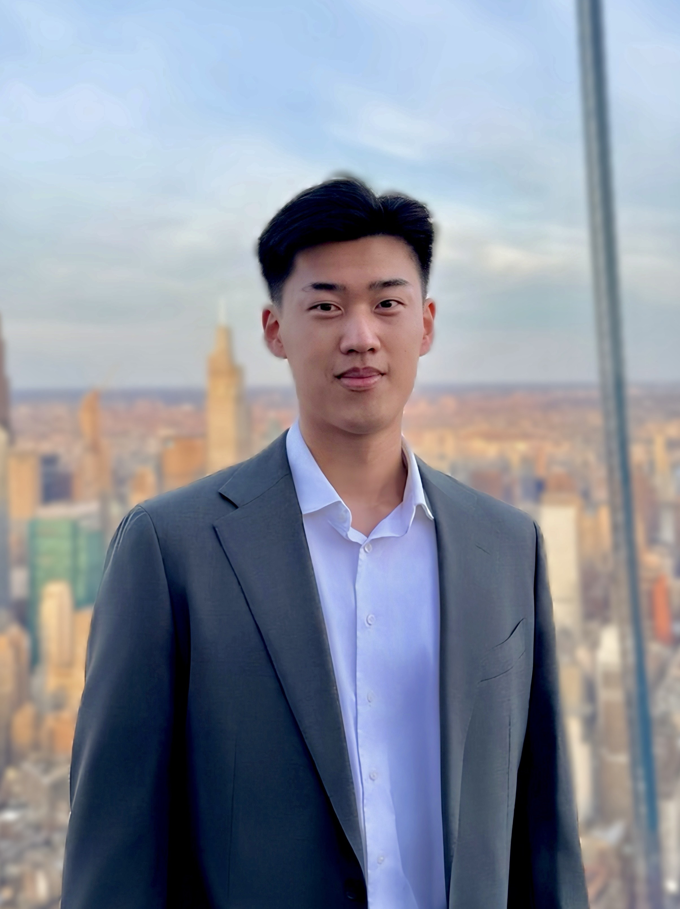

Columbia University · Mechanical Engineering

I build digital twins of the human heart. I combine scientific computing, biomechanics, and machine learning to integrate cardiac electrophysiology, tissue mechanics, and blood-flow modeling—predicting how an individual heart develops disease and responds to therapy.
Off the clock
The other thing I do with my hands. Everything here came out of a home kitchen, mostly on weeknights, mostly for other people. Hover a plate — or tap it — for what went in.
Awaiting plates
Drop photos into assets/kitchen/ and add a line for each in
kitchen.js.